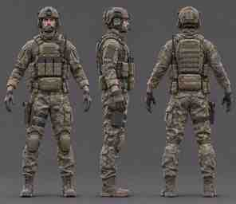

CODELV8 / SKILL BENCHMARK 01
Operator · Reference Envelope
AAA Tactical Character Studio — ตัวอย่าง Geometry จริงที่ยังไม่ผ่านเกณฑ์ AAA
Loading actual GLB…
Drag to orbit · wheel to zoom · arrow keys—
Reference atlas — diagnostic input, not a 3D render
Three distinct directions used for projection. The second same-facing profile was excluded.
